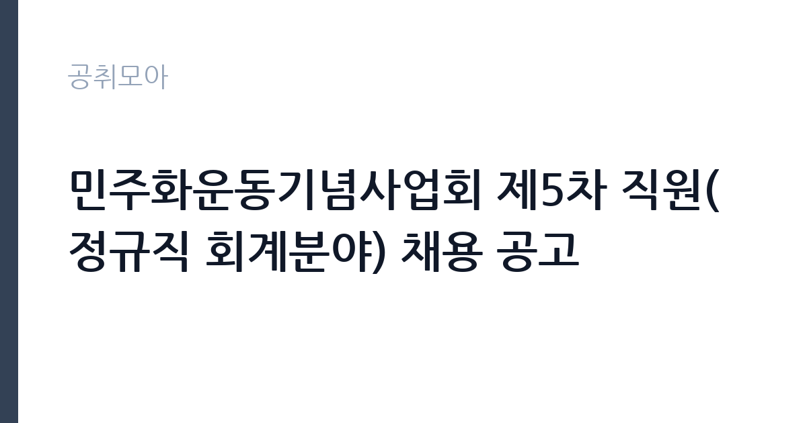

[공공기관] 민주화운동기념사업회 제5차 직원(정규직 회계분야) 채용 공고
민주화운동기념사업회 · 경기 · 마감 2026-11-13 (D-16) · 출처 나라일터

한눈에 보는 모집 조건
| 기관 | 민주화운동기념사업회 |
|---|---|
| 공고명 | 민주화운동기념사업회 제5차 직원(정규직 회계분야) 채용 공고 |
| 고용형태 | 정규직 |
| 근무지 | 경기 |
| 게시일 | 2026-10-28 |
| 마감일 | 2026-11-13 (D-16) |
지원자격, 이렇게 읽으세요
- 정규직 5급 1명
- 접수 ~2026-11-13 마감
- 세부 조건은 원문 공고문 확인
정규직 채용은 기간의 정함이 없는 근로계약을 전제로 합니다. 수습 기간을 두고 평가한 뒤 정규직으로 확정하는 절차가 일반적이며 기관의 인사 규정과 임금 체계를 적용받습니다. 이번 공고는 민주화운동기념사업회가 직접 진행하는 자체 전형입니다. 행정·사무 직무는 학력과 경력을 함께 보되 실무 경험을 우대하는 경우가 많습니다. 회계 직무는 전산회계나 세무 관련 자격을 우대하고 공공기관 경력자는 가점 대상이 됩니다. 문서 작성 능력과 엑셀 활용 능력은 서류와 면접에서 모두 평가됩니다. 채용 신분이 공무직, 기간제, 임기제 중 무엇인지에 따라 근무 기간과 신분이 달라지므로 먼저 확인해야 합니다. 결격사유 조회는 공통 절차입니다. 응시 자격 판단이 애매하면 접수 전에 채용 담당 부서로 문의하는 편이 안전합니다. 공고문의 응시자격 표를 보면 자격 항목이 여러 줄로 나뉘어 있으므로, 각 줄을 하나씩 체크하며 본인 해당 여부를 표시해 두면 누락을 줄일 수 있습니다. 우대 사항에 해당하면 증빙을 반드시 첨부해야 하며, 누락하면 가점 없이 평가됩니다. 이 공고 원문에 적힌 응시 조건 문구는 '모집분야 : 회계분야((일반직) ○ 선발직급 : 일반직 5급 1명 ○ 고용형태 : 정규직 (수습기간 3개월) ○ 자격요건 : 채용공고문 참조 ○ 접수기간 : 2026.'입니다. 문구를 그대로 읽고 본인 해당 여부를 하나씩 표시해 두면 서류 단계에서 탈락하는 일을 줄일 수 있습니다.
이 공고의 포인트
이 건은 민주화운동기념사업회가 같은 시기에 낸 2개 모집분야 가운데 행정·사무 직무입니다. 다른 직무 공고와 요건이 다르므로 지원 전에 모집분야 표를 대조해야 합니다. 이 공고의 첫 번째 포인트는 고용 형태입니다. 수습 기간 평가를 통과하면 기간의 정함이 없는 신분이 되어 고용이 안정됩니다. 두 번째는 업무 범위가 명확하다는 점입니다. 행정·사무 직무로 채용되므로 배치 이후 담당 업무가 크게 흔들리지 않습니다. 세 번째는 근무지입니다. 경기 지역 근무로 접근성은 좋지만 그만큼 지원자가 몰리는 지역이므로 경쟁률을 넉넉히 잡아야 합니다. 같은 기관의 다른 공고와 접수 기간이 겹치므로 중복 지원 가능 여부를 확인해야 합니다. 같은 직무로 함께 올라온 공고 가운데 접수 마감이 가장 늦은 편이라 준비 시간을 상대적으로 확보할 수 있습니다. 다만 선발 인원이 1명으로 많지 않아 자격을 갖춘 지원자가 몰리면 경쟁률이 높아질 수 있습니다.
전형은 어떻게 진행되나
서류전형과 면접전형 외에 직무수행능력 평가가 붙는 경우가 있습니다. 평가 방식은 공고문에 구체적으로 적혀 있으므로 어떤 항목에 배점이 높은지 먼저 파악하십시오. 면접에서는 지원 동기보다 실제 업무 경험에 대한 질문이 많고, 답변의 구체성이 평가를 가릅니다. 전형 일정은 서류 마감 이후 빠르게 진행되므로 연락 가능한 번호를 정확히 기재하고 문자와 메일을 수시로 확인해야 합니다. 최종 단계에서는 결격사유 조회와 신체검사가 진행됩니다. 동점자 처리 기준이 공고문에 명시되어 있으니 배점 항목을 미리 확인해 두십시오.
원문에서 확인한 전형 방식
민주화운동기념사업회 2026년 제5회차직원 채용을 다음과 같이 공고하오니, 전문지식과 경력을 갖춘 유능한 인재들의 많은 응모 바랍니다. ○ 모집분야 : 회계분야((일반직) ○ 선발직급 : 일반직 5급 1명 ○ 고용형태 : 정규직 (수습기간 3개월) ○ 자격요건 : 채용공고문 참조 ○ 접수기간 : 2026. 10. 28.(수) ~ 11. 13.(금) 17:00까지 ○ 응시방법 : 온라인 지원페이지를 통한 접수만 가능 (https://recruit.incruit.com/kdemo/) ○ 문의처 : 민주화운동기념사업회 운영관리팀 채용담당 031-361-9531 ※ 전형일정은 기관 사정에 따라 변경될 수 있으며, 세부 지원자격, 전형방법 및 유의사항 등은 첨부된 채용 공고문을 반드시 확인하시기 바랍니다.
이런 분께 추천해요
- 문서 작성과 엑셀 활용이 능숙한 분
- 여러 업무를 동시에 정리할 수 있는 분
- 회계·예산 실무 경험이 있는 분
지원 전 체크리스트
- 응시자격 요건과 경력 기준을 충족하는가 — 경력은 증명서로 입증해야 합니다
- 수습 기간과 정규직 전환 조건을 확인했는가
- 제출서류 목록을 모두 준비했는가 — 누락 시 서류 단계에서 탈락합니다
- 접수 마감 2026-11-13 이전에 접수 방식을 확인해 제출했는가
모집 일정과 제출 타이밍
공고 게시일은 2026-10-28, 접수 마감은 2026-11-13입니다. 준비 기간은 약 16일로 서류 준비와 자격 증빙을 함께 처리하기에는 넉넉하지 않은 편입니다. 첫 이틀 안에 공고문과 첨부 서식을 내려받아 요건을 확인하고 남은 기간에 증빙 서류를 발급받는 일정이 현실적입니다. 면접은 서류 합격자 발표 후 짧은 간격으로 진행되는 경우가 많으므로 서류 제출과 동시에 면접 준비를 시작하는 편이 안전합니다. 마감일에는 접수 시스템이 몰리므로 하루 전까지 제출을 마치는 것이 좋습니다. 임용 예정일이 빠르게 잡히는 공고이므로 현재 일정과 겹치지 않는지 미리 확인하십시오.
직무 이해하기: 공공기관
이 기관은 공공 서비스 제공을 목적으로 설립된 공공기관으로, 채용 공고에 따라 부서별 실무 인력을 선발합니다. 기관의 사업 범위와 조직 구성은 홈페이지에서 확인할 수 있으며 채용 절차는 자체 인사 규정을 따릅니다. 행정·사무 업무는 부서 운영을 지원하는 실무 전반을 맡습니다. 문서 작성과 결재 처리, 예산 집행과 정산, 물품 구매와 자산 관리가 기본 업무입니다. 민원 응대와 전화 안내, 회의 준비와 기록도 일상적으로 발생합니다. 회계 업무가 붙으면 지출 증빙 검토와 세금 계산서 처리, 결산 자료 작성까지 포함됩니다. 업무가 여러 갈래로 동시에 들어오기 때문에 우선순위 관리가 실력의 핵심입니다. 이 직무는 담당 구역이 정해져 있어 근무지에 따라 실제 업무 환경이 달라집니다. 직무 교육은 입사 후 기관 자체 계획에 따라 진행되므로 사전 경험이 없어도 시작할 수 있습니다. 이 건의 근무 대상 지역·부서는 원문 기준 '정규직 회계분야'입니다 원문에 '급 : 일반직 5급 1명 ○ 고용형태 : 정규직 (수습기간 3개월) ○ 자격요건 : 채용공고문 참조 ○ 접수기간 : 2026'라는 조건이 명시되어 있습니다.
자기소개서 작성 팁
행정·사무 지원서는 실무 경험을 업무 단위로 정리하는 것이 효과적입니다. 담당했던 문서 종류와 처리 건수, 예산 규모, 개선한 절차를 구체적으로 쓰십시오. 반복 업무를 자동화하거나 서식을 개선한 경험은 강한 소재입니다. 정확성과 마감 준수를 보여주는 사례를 반드시 한 개 이상 넣으십시오. 문항별 글자 수 제한을 먼저 확인하고, 각 문항의 첫 문장에 결론을 배치하는 방식이 읽기 쉽습니다. 지원 동기는 기관의 어떤 사업에 기여하겠다는 한 문장으로 시작하고, 이어서 본인의 경험을 근거로 붙이십시오. 감점을 피하려면 다른 기관에 보낼 수 있는 범용 문장을 그대로 쓰지 않는 것이 중요합니다. 기관 이름과 사업명이 문장 안에 자연스럽게 들어가야 준비도가 드러납니다.
면접 준비 포인트
면접에서는 업무 처리 방식과 정확성을 확인합니다. 마감이 겹치는 업무를 어떻게 정리할지, 상급자 지시가 여러 갈래로 들어올 때 어떻게 처리할지 묻습니다. 회계 업무라면 증빙이 맞지 않을 때 어떻게 대응하는지가 핵심 질문입니다. 엑셀 함수 활용이나 문서 작성 경험을 구체적으로 답하면 신뢰를 줍니다. 본인 경험을 말할 때는 기간, 역할, 결과를 순서대로 정리해 두면 질문이 바뀌어도 활용할 수 있습니다. 본인 경험을 말할 때는 기간, 역할, 결과를 순서대로 정리해 두면 질문이 바뀌어도 활용할 수 있습니다.
급여·근무조건 읽는 법
알리오(공공기관 경영정보 공개시스템) 2025년 결산 경영공시 기준으로 민주화운동기념사업회 일반정규직 1인당 평균보수액은 6,049만원, 공시된 신입사원 초임은 3,365만원입니다. 무기계약직 1인당 평균보수액은 4,182만원으로 공시되어 정규직과 차이가 납니다. 평균보수액은 기본급에 고정수당·실적수당·성과상여금·급여성 복리후생비를 모두 합산한 값이라 월 기본급만 보고 판단하면 실제와 크게 어긋납니다. 정규직 신입의 경우 공시된 신입사원 초임이 출발점이 되고, 이후 호봉과 성과급에 따라 평균보수에 접근합니다. 행정·사무 직무의 보수는 채용 신분에 따라 달라집니다. 공무직은 기관 임금표의 기본급에 정액급식비·명절휴가비·복지포인트가 더해지고, 기간제는 계약 기간과 월급이 명시됩니다. 임기제공무원은 연봉등급제를 적용받습니다. 초과근무수당과 정근수당 포함 여부에 따라 실수령액이 달라지므로 원문 처우표를 보셔야 합니다. 2026년 적용 최저임금은 시급 10,320원, 월 환산 2,156,880원(주 40시간·209시간 기준)입니다. 고용노동부 고시 제2025-47호로 확정된 금액입니다. 공고문에 금액이 제시되지 않은 항목은 원문 보수표나 처우 설명에서 확인해야 하며 확인되지 않은 수치는 쓰지 않는 것이 원칙입니다. 비교할 때는 월 급여뿐 아니라 상여·명절휴가비·복지포인트·초과근무수당까지 포함한 연간 총액으로 계산하십시오. 기간제라면 계약 기간 동안의 총액을, 무기계약이라면 호봉 상승과 정년까지의 누적 소득을 기준으로 판단하는 편이 정확합니다.
자주 묻는 질문
- 선발 인원은 몇 명인가요?
공고문 기준 1명입니다. 직종별로 인원이 나뉘는 경우가 있으니 모집분야 항목을 함께 확인하십시오. - 근무지는 어디인가요?
경기 지역의 민주화운동기념사업회 소속 근무지입니다. 세부 주소와 출퇴근 조건은 원문 공고문에서 확인할 수 있습니다. - 보수는 얼마인가요?
채용 신분(정규직)과 기관 임금 규정에 따라 정해지며 구체적인 금액은 공고문 처우 항목에 제시됩니다. 금액이 공개되지 않은 경우에는 원문의 보수표를 확인하십시오.
함께 보면 좋은 공고
[공공기관] 2026년 제2차 국외소재문화유산재단 직원 채용(6급, 임시계약직 사업A/사업B) — 마감 2026-11-09[공공기관] 한국농어촌공사 금강사업단(보훈/장애제한경쟁) 공무직(청소원) 채용 — 마감 2026-11-13[공공기관] 분당서울대학교병원 진료교수요원(핵의학과) 채용공고 — 마감 2026-11-09출처: 나라일터 공개정보를 바탕으로 공취모아가 정리한 안내글입니다. 모집 조건·일정은 변경될 수 있으니 지원 전 반드시 원문 공고문을 확인하세요. 본 글은 정보 제공용이며 합격을 보장하지 않습니다.